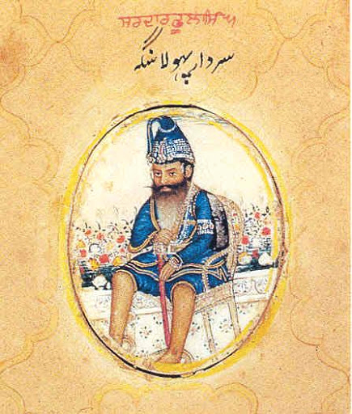

अकाली फूला सिंह


शीर्षक: अकाली फूला सिंह
श्रेणी: धार्मिक कोना
कलाकार: ऐतिहासिक व्यक्तित्व
वर्ष: 1761 – 1823
श्रेणी: धार्मिक कोना
कलाकार: ऐतिहासिक व्यक्तित्व
वर्ष: 1761 – 1823
अकाली फूला सिंह
अकाली फूला सिंह (1761–1823) निहंग खालसा के परम तेजस्वी नेता और श्री अकाल तख्त साहिब के आदरणीय जत्थेदार थे। वे निष्पक्षता, आत्मिक दृढ़ता और निर्भीक योद्धा भावना के जीवंत प्रतीक थे। वे जीवन पर्यंत ब्रह्मचारी रहे और अपना संपूर्ण जीवन खालसा पंथ और सिख राज की रक्षा में समर्पित कर दिया। यहाँ तक कि उन्होंने मर्यादा उल्लंघन पर स्वयं महाराजा रणजीत सिंह को भी अकाल तख्त पर तलब कर जवाबदेही तय की थी, जिसे महाराजा ने नतमस्तक होकर स्वीकार किया।
अकाली फूला सिंह और उनके निहंग योद्धाओं की टुकड़ी खालसा सेना का हरावल दस्ता (अग्रिम मोर्चा) होती थी। 1807 में कसूर, 1818 में मुल्तान और 1819 में कश्मीर की कठिन विजयों में उनकी भूमिका अत्यंत निर्णायक रही। 14 मार्च 1823 को पेशावर के निकट 'नौशेरा की लड़ाई' (पीर सबक) में जब सिख सेना के सामने विशाल अफगान लश्कर था, तब अकाली जी ने युद्ध में उतरने की पावन अरदास की। महाराजा द्वारा तोपखाने की प्रतीक्षा करने के सुझाव पर उन्होंने कहा कि 'खालसा की अरदास कभी वापस नहीं लौटती।' घोड़े पर सवार होकर उन्होंने अफगान मोर्चों पर भीषण प्रहार किया और गंभीर रूप से घायल होने के बावजूद अंतिम सांस तक लड़ते हुए शहादत का जाम पिया।
'सिख राज के अमर स्तंभ, जिनकी निर्भीकता और सिद्धांतों के आगे सम्राट भी नतमस्तक होते थे।'
अकाली फूला सिंह (1761–1823) निहंग खालसा के परम तेजस्वी नेता और श्री अकाल तख्त साहिब के आदरणीय जत्थेदार थे। वे निष्पक्षता, आत्मिक दृढ़ता और निर्भीक योद्धा भावना के जीवंत प्रतीक थे। वे जीवन पर्यंत ब्रह्मचारी रहे और अपना संपूर्ण जीवन खालसा पंथ और सिख राज की रक्षा में समर्पित कर दिया। यहाँ तक कि उन्होंने मर्यादा उल्लंघन पर स्वयं महाराजा रणजीत सिंह को भी अकाल तख्त पर तलब कर जवाबदेही तय की थी, जिसे महाराजा ने नतमस्तक होकर स्वीकार किया।
अकाली फूला सिंह और उनके निहंग योद्धाओं की टुकड़ी खालसा सेना का हरावल दस्ता (अग्रिम मोर्चा) होती थी। 1807 में कसूर, 1818 में मुल्तान और 1819 में कश्मीर की कठिन विजयों में उनकी भूमिका अत्यंत निर्णायक रही। 14 मार्च 1823 को पेशावर के निकट 'नौशेरा की लड़ाई' (पीर सबक) में जब सिख सेना के सामने विशाल अफगान लश्कर था, तब अकाली जी ने युद्ध में उतरने की पावन अरदास की। महाराजा द्वारा तोपखाने की प्रतीक्षा करने के सुझाव पर उन्होंने कहा कि 'खालसा की अरदास कभी वापस नहीं लौटती।' घोड़े पर सवार होकर उन्होंने अफगान मोर्चों पर भीषण प्रहार किया और गंभीर रूप से घायल होने के बावजूद अंतिम सांस तक लड़ते हुए शहादत का जाम पिया।
'सिख राज के अमर स्तंभ, जिनकी निर्भीकता और सिद्धांतों के आगे सम्राट भी नतमस्तक होते थे।'
मोबाइल पर खोलें
अपने फोन पर इस कलाकृति को देखने के लिए स्कैन करें।